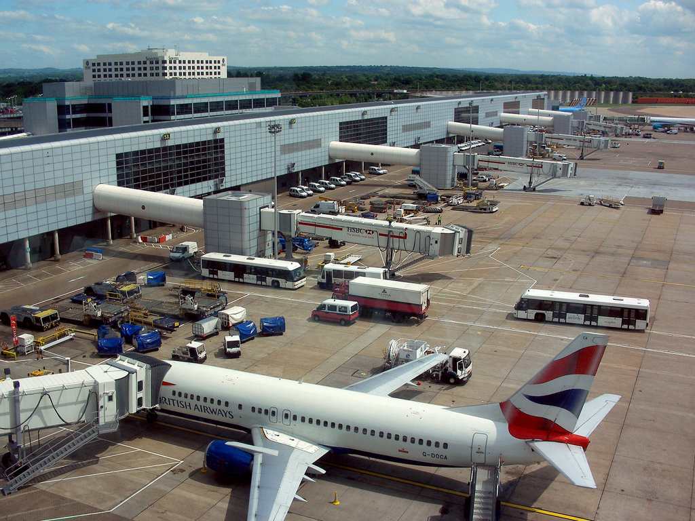

The EU has offered peace of mind to Brits taking to the skies for 13 years, having introduced flight delay compensation regulations in 2004.
In that time, 145k flights have been delayed by more than three hours, according to data from the Civil Aviation Authority.
24% of flights between the UK and European nations fall into the EU’s definition of a delayed flight, arriving at their destination 15 minutes later than expected. 0.7% of flights qualify for the maximum compensation, having been delayed by over three hours.
With the impending British exit from the European Union, consumer groups are debating what the next steps are for the UK to ensure consumer rights are entrenched.
Independent from complications that arise as a consequence to Brexit, the EU is currently negotiating some of the terms of the legislation which ensures air passengers are appropriately compensated if a flight is unfairly delayed.
Jacqueline Foster, Deputy leader of the Conservative MEPs, said: “The EU is currently in some debate over flight compensation. For the last two to three years, there have been problems with some of the court rulings determining the details of the law. The regulation is stuck in limbo in the European Parliament.”
The Conservative’s European spokesperson for Transport reports that there are numerous hang-ups with regards to how much power airlines should have in determining the conditions of compensating people who suffer delays.
She continued: “There have been complications in deciding who decides what conditions qualify for compensation and whether instances of technical faults, for example, should be included."
Currently, EU regulation 261/2004 known colloquially as ‘261’ codifies the rights of all EU citizens to fair compensation in the face of significant delays. Depending on distance, airlines are required to hand over €250 to €600 for flights between EU countries.
The delay must be the fault of the airline, and compensation can be withheld in cases of ‘extraordinary circumstance’ that are noted to be out of the airlines control. The EU provides consumer confidence through statute law and airlines have always accepted the regulations.
Foster does not expect the UK leaving the EU to have much of an effect on how consumers are protected. She said: “In terms of Brexit, I don't think there will be any change at all in terms of Britain being compliant with existing regulations. It's written into our statues and when we leave the EU all of this legislation will stay in place. I wouldn't expect the government to pull out in this area.”
The UK’s hand in crafting the legislation, Foster believes, is enough to ensure the ‘261’ will stay in some form. She continues: "There will be a number of areas where we have been part and parcel of framing this legislation; the UK is a world leader when it comes to consumer rights. I don't think the consumer will lose out here and it would be far too complicated to change the law depending on where a flight takes off and lands"
Data shows that the airlines have decreased delays in the last year, with 2016 proving the most punctual since the regulation was bought in. Yearly figures have fluctuating, however, and there was a difference of 200k in the total number of flight delays between 2009 and 2010.
2010 was also the worst year on record for flight delays over one hour, with 117k flights absent from the tarmac for at least 60 minutes. In comparison, less than 30k flights were delayed for this long last year.
Are you flying this summer?
Which airport should you use to avoid delays?
Select two airports from the drop down below to compare.
- hello
- hello
- hello
It is too early to tell what impact system’s failures for British Airways and Thomas Cook will have on figures for 2017. On May 27, a technical glitch caused delays as long as 14 hours for thousands of passengers flying from UK airports.
Technical difficulties also plagued check-in desks for Thomas Cook flights from Manchester airport, causing further delays on June 14. There is no consistent process for seeking compensation and most airlines require differing levels of proof of delay.
Joe Patten, a spokesperson for Which?, said: "There's quite a confusing system domestically for when people have complaints about airlines: different airlines are signed up for different arbitration schemes and it's not always clear to whom a passenger should go."
Which? reported a 230% increase in visitors to their pages related to flight compensation. Whilst this is expected as consumers look forward to their summer plans, such an increase, according to Which?, correlates to recent systems issues for airlines such as British Airways.
"In the instance of BA we don't think they are actively doing enough to inform passengers of their rights. Everything is a bit unclear at the moment. Everything is up in the air because it's all EU regulations, but compensation when your flight is delayed is something we want to see maintained for consumers.
In responding to the uncertainty of the role of European law following Brexit, Which? Have endorsed the idea of creating a ‘travel ombudsman’ responsible for consumer protection at a national level. An ombudsman is seen as something, “that would fall nicely into that post-brexit landscape."
The average delay at Gatwick airport in 2016 was 18 and a half minutes
Calls for a travel ombudsman have been reinforced by Money Saving Expert, a website offering travel advice to consumers in the UK.
Site founder Martin Lewis expressed his concerns whenever compensation law is liable to change. He said: “We much prefer when the rights of the consumer are extended and situations where these rights are called into debate or subject to interference does cause concern.”
Lewis understands Brexit to be an opportunity to reaffirm the rights of consumers and, dependent on how it would be organised, is supportive of an ombudsman for travel. “I think it’s a sensible idea, and would certainly keep consumer protection independent from those with an interest in reining things in.”
CAA data has also shown large differences in the average flight delay for competing airports. Only 50 miles separate Gatwick airport from the City of London airport, yet the average delay at Gatwick is 18 and a half minutes compared to just over 9 in the city.
Manchester and Heathrow have also consistently featured lengthy delays, with the average delay at each airport being 17.7 and 16.3 minutes respectively. Over a quarter of flights leaving Heathrow airport in 2016 were officially delayed.
Heathrow and Gatwick airports were unavailable for comment when asked to respond to the data.
"We were delayed longer than the duration of the flight, because a light was broken and no one could fix it."
When a flight is delayed, a chain reaction will begin. Annoyance begets anger begets logistical problems surrounding food, drink and general customer welfare - all at significant cost to passenger and airline alike.
Flights delayed by more than 5 hours are rare. CAA data provides a figure for flights delayed by over 5 hours and, even then, this only represents 0.007% of flights. When it does happen, however, airlines are expected to compensate those affected justly.
Alexandra Ma flew from London Heathrow to Hong Kong International Airport in December, and was delayed for a total of 5 hours and 40 minutes. First whilst waiting for the plane to arrive and then, again, waiting for takeoff.
She said: “I have never seen such an uproar. I was naturally upset because it was the holidays and I was looking forward to seeing my family. To suffer through a delay for two separate incidents was awful luck.”
Alexandra was told, whilst she could claim for the first delay as it had been caused by air traffic control, the second delay was caused by ‘exceptional circumstances’ and British Airways were under no obligation to cough up. “Like the 300 other people on that flight, I was very disappointed.”
More information can be found in the reflection for this project. If you'd like to look through the data yourself, it is available here.